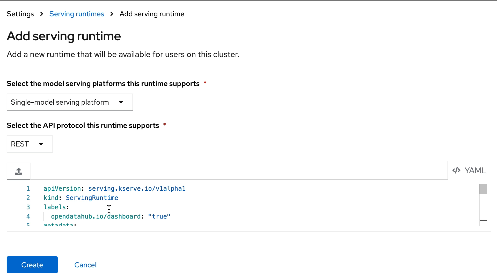

OpenShift AI Customization
Model Serving Runtimes
A model-serving runtime provides integration with a specified model server and the model frameworks that it supports. By default, Red Hat OpenShift AI includes the following Model Run Times:
-
OpenVINO Model Server runtime.
-
Caikit TGIS for KServe
-
TGIS Standalone for KServe
However, if these runtime do not meet your needs (it they don’t support a particular model framework, for example), you might want to add your own custom runtimes.
As an administrator, you can use the OpenShift AI interface to add and enable custom model-serving runtimes. You can then choose from your enabled runtimes when you create a new model server.
This exercise will guide you through the broad steps necessary to deploy a custom Serving Runtime in order to serve a model using the Ollama Model Serving Framework.
|
While RHOAI supports the ability to add your own runtime, it is up to you to configure, adjust, and maintain your custom runtimes. |
Add The Ollama Custom Runtime
-
Log in to RHOAI with a user who is part of the RHOAI admin group, for this lab we will be using the admin account.
-
In the RHOAI Console, Navigate to the Settings menu, then select Serving Runtimes
-
Select the Add Serving Runtime button:
-
For the model serving platform runtime, select: Single-Model Serving Platform.
-
For API protocol this runtime supports, select: REST
-
Click on Start from scratch in the window that opens up, paste the following YAML:
apiVersion: serving.kserve.io/v1alpha1 kind: ServingRuntime labels: opendatahub.io/dashboard: "true" metadata: annotations: openshift.io/display-name: Ollama name: ollama spec: builtInAdapter: modelLoadingTimeoutMillis: 90000 containers: - image: quay.io/rh-aiservices-bu/ollama-ubi9:0.1.30 env: - name: OLLAMA_MODELS value: /.ollama/models - name: OLLAMA_HOST value: 0.0.0.0 - name: OLLAMA_KEEP_ALIVE value: '-1m' name: kserve-container ports: - containerPort: 11434 name: http1 protocol: TCP multiModel: false supportedModelFormats: - autoSelect: true name: any -
After clicking the Create button at the bottom of the input area, you will see the new Ollama Runtime in the list. We can re-order the list as needed (the order chosen here is the order in which the users will see these choices).
Create a Data Science Project
Navigate to & select the Data Science Projects section.
-
Select the create data science project button.
-
Enter a name for your project, such as ollama-model.
-
The resource name should be populated automatically.
-
Optionally add a description to the data science project.
-
Select Create.
Deploy MinIO as S3 Compatible Storage
MinIO overview
MinIO is a high-performance, S3-compatible object store. It can be deployed on a wide variety of platforms, and it comes in multiple flavors.
This segment describes a very quick way of deploying the community version of MinIO in order to quickly setup a fully standalone Object Store, in an OpenShift Cluster. This can then be used for various prototyping tasks that require Object Storage.
| This version of MinIO should not be used in production-grade environments. Aditionally, MinIO is not included in RHOAI, and Red Hat does not provide support for MinIO. |
MinIO Deployment
To Deploy MinIO, we will utilize the OpenShift Dashboard.
-
Click on the Project Selection list dropdown and select the Ollama-Model project or the data science project you created in the previous step.
-
Then Select the + (plus) icon from the top right of the dashboard.
-
In the new window, we will paste the following YAML file. In the YAML below its recommended to change the default user name & password.
---
kind: PersistentVolumeClaim
apiVersion: v1
metadata:
name: minio-pvc
spec:
accessModes:
- ReadWriteOnce
resources:
requests:
storage: 40Gi
volumeMode: Filesystem
---
kind: Secret
apiVersion: v1
metadata:
name: minio-secret
stringData:
# change the username and password to your own values.
# ensure that the user is at least 3 characters long and the password at least 8
minio_root_user: minio
minio_root_password: minio123
---
kind: Deployment
apiVersion: apps/v1
metadata:
name: minio
spec:
replicas: 1
selector:
matchLabels:
app: minio
template:
metadata:
creationTimestamp: null
labels:
app: minio
spec:
volumes:
- name: data
persistentVolumeClaim:
claimName: minio-pvc
containers:
- resources:
limits:
cpu: 250m
memory: 1Gi
requests:
cpu: 20m
memory: 100Mi
readinessProbe:
tcpSocket:
port: 9000
initialDelaySeconds: 5
timeoutSeconds: 1
periodSeconds: 5
successThreshold: 1
failureThreshold: 3
terminationMessagePath: /dev/termination-log
name: minio
livenessProbe:
tcpSocket:
port: 9000
initialDelaySeconds: 30
timeoutSeconds: 1
periodSeconds: 5
successThreshold: 1
failureThreshold: 3
env:
- name: MINIO_ROOT_USER
valueFrom:
secretKeyRef:
name: minio-secret
key: minio_root_user
- name: MINIO_ROOT_PASSWORD
valueFrom:
secretKeyRef:
name: minio-secret
key: minio_root_password
ports:
- containerPort: 9000
protocol: TCP
- containerPort: 9090
protocol: TCP
imagePullPolicy: IfNotPresent
volumeMounts:
- name: data
mountPath: /data
subPath: minio
terminationMessagePolicy: File
image: >-
quay.io/minio/minio:RELEASE.2023-06-19T19-52-50Z
args:
- server
- /data
- --console-address
- :9090
restartPolicy: Always
terminationGracePeriodSeconds: 30
dnsPolicy: ClusterFirst
securityContext: {}
schedulerName: default-scheduler
strategy:
type: Recreate
revisionHistoryLimit: 10
progressDeadlineSeconds: 600
---
kind: Service
apiVersion: v1
metadata:
name: minio-service
spec:
ipFamilies:
- IPv4
ports:
- name: api
protocol: TCP
port: 9000
targetPort: 9000
- name: ui
protocol: TCP
port: 9090
targetPort: 9090
internalTrafficPolicy: Cluster
type: ClusterIP
ipFamilyPolicy: SingleStack
sessionAffinity: None
selector:
app: minio
---
kind: Route
apiVersion: route.openshift.io/v1
metadata:
name: minio-api
spec:
to:
kind: Service
name: minio-service
weight: 100
port:
targetPort: api
wildcardPolicy: None
tls:
termination: edge
insecureEdgeTerminationPolicy: Redirect
---
kind: Route
apiVersion: route.openshift.io/v1
metadata:
name: minio-ui
spec:
to:
kind: Service
name: minio-service
weight: 100
port:
targetPort: ui
wildcardPolicy: None
tls:
termination: edge
insecureEdgeTerminationPolicy: RedirectThis should finish in a few seconds. Now it’s time to deploy our storage buckets.
MinIO Storage Bucket Creation
From the OCP Dashboard:
-
Select Networking / Routes from the navigation menu.
-
This will display two routes, one for the UI & another for the API.
-
For the first step, select the UI route and paste it in a browser Window.
-
This window opens the MinIO Dashboard. Log in with user/password combination you set, or the default listed in yaml file above.
Once logged into the MinIO Console:
-
Click Create Bucket to get started.
-
Create two Buckets:
-
models
-
storage
-
| When serving an LLM or other model, Openshift AI looks within a Folder. Therefore, we need at least one subdirectory under the Models Folder. |
-
Via the Navigation menu, select object browser, then click on the Model Bucket.
-
From the models bucket page, click add path, and type ollama as the name of the sub-folder or path.
| In most cases, to serve a model, the trained model would be uploaded into this sub-directory. However, Ollama is a special case, as it can download and manage Several LLM models as part of the runtime. |
-
We still need a file available in this folder for the model deployment workflow to succeed.
-
So we will copy an emptyfile.txt file to the ollama subdirectory. You can download the file from this location. Alternatively, you can create your own file called emptyfile.txt and upload it.
-
Once you have this file ready, upload it into the Ollama path in the model bucket by clicking the upload button and selecting the file from your local desktop.
Create Data Connection
Navigate to the Data Science Project section of the OpenShift AI Console /Dashboard. Select the Ollama-model project.
-
Select the Data Connection menu, followed by create data connection
-
Provide the following values:
-
Name: models
-
Access Key: use the minio_root-user from YAML file
-
Secret Key: use the minio_root_password from the YAML File
-
Endpoint: use the Minio API URL from the Routes page in Openshift Dashboard
-
Region: This is required for AWS storage & cannot be blank (no-region-minio)
-
Bucket: use the Minio Storage bucket name: models
-
Repeat the same process for the Storage bucket, using storage for the name & bucket.
Creating a WorkBench
Navigate to the Data Science Project section of the OpenShift AI Console /Dashboard. Select the Ollama-model project.
-
Select the WorkBench button, then click create workbench
-
Name:
ollama-model -
Notebook Image:
Minimal Python -
Leave the remianing options default.
-
Optionally, scroll to the bottom, check the
Use data connection box. -
Select storage from the dropdown to attach the storage bucket to the workbench.
-
-
Select the Create Workbench option.
| Depending on the notebook image selected, it can take between 2-20 minutes for the container image to be fully deployed. The Open Link will be available when our container is fully deployed. |
Creating The Model Server
From the ollama-model WorkBench Dashboard in the ollama-model project, navigate to the Models section, and select Deploy Model from the Single Model Serving Platform Button.
Create the model server with the following values:
-
Model name:
Ollama-Mistral -
Serving Runtime:
Ollama -
Model framework:
Any -
Model Server Size:
Medium -
Model location data connection:
models -
Model location path:
/ollama
After clicking the Deploy button at the bottom of the form, the model is added to our Models & Model Server list. When the model is available, the inference endpoint will populate & the status will indicate a green checkmark.
We are now ready to interact with our newly deployed LLM Model. Join me in Section 2 to explore Mistral running on OpenShift AI using Jupyter Notebooks.